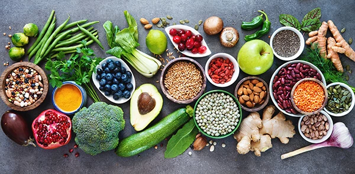

Coma bem, coma saudável!
Todo mundo já ouviu alguém dizendo que o café da manhã é a refeição mais importante do dia. E quem fala isso não está errado, já que o café que fornecerá os primeiros nutrientes para o nosso corpo e ditará como será nossa disposição pelas horas seguintes. No entanto, é necessário avaliar com cuidado o que consumimos logo na primeira refeição do dia. Comer certos alimentos com uma grande frequência pode trazer graves consequências para sua saúde a médio e longo prazo. Uma alimentação balanceada pela manhã ajuda a manter hormônios importantes por mais tempo em nosso organismo. Alguns deles são o GH, o famoso hormônio do crescimento e a testosterona, responsável pelo nosso vigor, energia, desempenho sexual, aumento da massa muscular e a diminuição da gordura. Pensando nisso separamos abaixo alguns dos alimentos que não são recomendados para o seu café da manhã. Confira!
Dica de hoje:
Imagine que você está há oito horas sem comer. Provavelmente, seu corpo estará precisando ser reabastecido para poder manter seu bom funcionamento, certo?
Pois é isso que acontece todos os dias quando acordamos – e é por esse motivo que tomar um café da manhã nutritivo é tão importante para a nossa saúde. Muitas pessoas sentem dificuldade em se alimentar pela manhã ou comem qualquer coisa às pressas, pois o dia está cheio de compromissos e não há tempo a perder. Contudo, esse é um hábito prejudicial para o nosso organismo. Além da falta de nutrientes e energia para iniciar nossas atividades, ficar em jejum favorece o ganho de peso, pois o organismo entende que está em privação e faz de tudo para economizar suas reservas, desacelerando o metabolismo. Para piorar, as pessoas que não tomam café da manhã acabam tendo mais picos de fome durante o dia, que aumentam as “beliscadas” entre as refeições. Se você se identifica com essas situações, aqui estão nossas dicas de como preparar um café da manhã nutritivo, saboroso e prático para o seu dia a dia:
Receitas para um café da manhã nutritivo
1. VITAMINA DE MAÇÃ E AVEIA
- 1 copo de 250 ml de leite desnatado
- ½ maçã com casca
- 1 colher de sopa de aveia em flocos finos Caldo Bom
- 1 colher de sopa de canela em pó Caldo Bom
Bata todos os ingredientes no liquidificador e beba em seguida.
2. MAMÃO COM GRANOLA, AVEIA E MEL
- ½ mamão-papaia cortado em cubos
- 2 colheres de sopa de granola sem açúcar
- 1 colher de sopa de aveia em flocos finos Caldo Bom
- 1 colher de sopa de mel
Misture todos os ingredientes em uma tigela e consuma seu café da manhã saudável.
3. FALSO PÃO DE FRIGIDEIRA
- 1 pote de iogurte natural sem açúcar
- A mesma medida de farinha de trigo integral
- 1 colher de sopa de chia em grãos Caldo Bom
- 1 colher de chá de orégano Caldo Bom
- 1 pitada de sal
Misture todos os ingredientes em um recipiente até obter uma massa uniforme. Aqueça uma frigideira untada e despeje um pouco da massa, como se fosse uma panqueca. Vire para dourar dos dois lados. Você pode consumir o falso pão com queijo branco ou requeijão light.
4. CREPIOCA DE BANANA COM AVEIA E CHIA
- 2 ovos
- 5 colheres de sopa de goma de tapioca hidratada (TEMOS TAPIOCA TAMBÉM)
- 1 banana
- 1 colher de sopa de aveia em flocos finos Caldo Bom
- 1 colher de sopa de chia em grãos Caldo Bom
- Mel a gosto
Coloque os ovos, a goma de tapioca, a banana e a aveia no liquidificador e bata até virar uma mistura uniforme. Adicione os grãos de chia e mexa com uma colher. Adoce com mel a gosto se desejar. Em seguida, despeje a massa em uma frigideira untada com óleo vegetal e deixe dourar em fogo baixo. Quando começar a soltar, vire a crepioca para cozinhar dos dois lados.
5. IOGURTE COM CASTANHA, NOZES E AVEIA
- 1 pote de iogurte light no sabor de sua preferência
- 2 colheres de sopa de castanha-do-pará picadas
- 2 colheres de sopa de nozes picadas
- 1 colher de sopa de aveia em flocos finos Caldo Bom
- Mel para adoçar se necessário
Misture todos os ingredientes em um recipiente e adoce com mel se desejar. Consuma em seguida.
6. CAFÉ DA MANHÃ AMERICANO - PANQUECA
- 1 e ¼ xícara (chá) de farinha de trigo
- 1 colher (sopa) de açúcar
- 3 colheres (chá) de fermento em pó
- 2 ovos levemente batidos
- 1 xícara (chá) de leite
- 2 colheres (sopa) de manteiga derretida
- Uma pitada de sal
- Óleo
Misture em uma tigela a farinha, o açúcar, o sal e o fermento. Em outro recipiente, misture os ovos, o leite e a manteiga. Acrescente os ingredientes líquidos aos secos, sem mexer demais. O ponto ideal da massa é não ficar muito líquido, mas cremoso e leve. Em uma frigideira aquecida e untada, coloque uma porção da massa ao centro, cerca de ¼ de xícara por rodela de panqueca. Vire a massa para assar do outro lado e sirva como preferir. A panqueca no café da manhã fica boa com frutas picadas, mel ou algum tipo de calda doce. Não é preciso enrolar as panquecas.
7. CAFÉ DA MANHÃ VEGANO – MINGAU DE AVEIA
- 2 xícaras (chá) de leite de amendoim, amêndoas, coco ou soja
- 5 colheres (sopa) de aveia em flocos finos Caldo Bom
- 2 colheres (sopa) de açúcar
- Uma pitada de sal
- Um fio de óleo de coco
- Canela em pó a gosto
Misture em uma tigela a aveia, cerca de ½ xícara do leite escolhido, o açúcar e uma pitadinha de sal. Despeje o restante do leite em uma panela média e deixe aquecer em fogo médio. Quando estiver quase fervendo, coloque a mistura da aveia com o leite e misture até que o mingau fique encorpado e comece a ferver. Deixe cozinhar em fogo baixo por cerca de sete minutos, mexendo de tempos em tempos para não empelotar ou queimar. Depois de desligar a panela você pode adicionar um fio de óleo de coco.
Na hora de servir o mingau, use a criatividade! Você pode comê-lo com pasta de amendoim, banana, cacau em pó e frutas. Bom apetite!
8. CAFÉ DA MANHÃ INGLÊS
- 2 xícaras (chá) de feijão assado (baked beans)
- 1 colher (sopa) de óleo
- 4 fatias de bacon
- 8 unidades de cogumelos portobello
- 8 unidades de tomatinhos maduros
- 2 unidades de linguiça de porco
- 2 fatias de pão de forma
- 2 ovos
- 4 fatias de morcela (opcional)
Aqueça o feijão em uma panela. Coloque o óleo em uma frigideira grande e leve ao fogo médio – quando esquentar, coloque as fatias de bacon e deixe dourar por alguns minutos. Acrescente os cogumelos e os tomates e deixe a mistura no fogo por mais 10 minutos, virando os cogumelos e os tomates na metade do tempo.
Em outra panela, frite as linguiças e a morcela e reserve.
Na frigideira dos cogumelos e dos outros ingredientes, quebre os ovos e frite até que estejam com a clara branca, mas as gemas ainda moles.
Torre as fatias de pão em uma torradeira ou em uma frigideira com um pouco de manteiga. Sirva logo a seguir.
Combinações de alimentos para um café da manhã nutritivo

9. CAFÉ COM PÃO INTEGRAL E MORANGOS
- 1 xícara de café com adoçante
- 1 fatia média de pão integral com grãos
- 1 colher de sopa de requeijão, cream cheese ou ricota light
- 5 morangos
10. CAFÉ COM LEITE E OVOS MEXIDOS
- 2 ovos mexidos com ervas aromáticas de sua preferência
- 1 fatia de pão integral com grãos e sementes
- 1 xícara de café com leite desnatado com adoçante
- 1 fatia de melão
11. CAFÉ DA MANHÃ LOW CARB
- 3 rolinhos de blanquet de peito de peru com fatias de queijo amarelo de sua preferência
- 1 copo de vitamina de leite de soja light batido com 5 morangos e 1 colher de sopa de chia em grãos Caldo Bom
12. CAFÉ DA MANHÃ SAUDÁVEL NA LANCHONETE
- 1 “pingado” com adoçante
- 1 pão francês na chapa sem manteiga
- 1 pedaço de queijo branco
13. CAFÉ DA MANHÃ NUTRITIVO PARA COMER NO CAMINHO DO TRABALHO
- 1 pote de iogurte light
- 1 barra de cereais sem xarope de glicose e sem cobertura de chocolate
- 1 maçã ou uma banana
Por que você não deve pular o café da manhã
No início do texto, falamos a respeito da importância do café da manhã em relação a fatores como ganho de peso, aumento dos picos de fome ao longo do dia e, claro, a necessidade nutricional do corpo humano depois de uma noite de sono.
Um estudo feito pela Escola de Medicina da Universidade de Ohio, nos EUA, mostrou que o ato de não comer nada pela manhã provoca falta de nutrientes essenciais para uma dieta saudável e equilibrada.
Ao analisar hábitos alimentares de mais de 30 mil pessoas adultas, os pesquisadores observaram que as pessoas que não comiam nada pela manhã (15,2%) eram também as que ingeriam quantidades muito inferiores de minerais e vitaminas — houve um déficit especial em relação a elementos como cálcio, ferro, fósforo, ácido fólico e as vitaminas A, B1, B2, B3, C e D.
Além disso, quem costuma pular o momento do desjejum tende a consumir mais açúcar, gordura e carboidratos ao longo do dia, o que tem relação com o costume de “beliscar” lanchinhos e petiscos com mais frequência. O resultado? Consumo maior de calorias e, por consequência, ganho de peso.
De acordo com o responsável pela pesquisa, Christopher Taylor, professor de Medicina, “a pessoa que não come os alimentos típicos do café da manhã tende a não incluí-los na dieta depois e, por isso, ocorre essa lacuna de nutrientes”. É por isso que um bom café da manhã deve ter laticínios, frutas e fibras.
Em crianças, por exemplo, a falta do café da manhã prejudica no rendimento escolar e diminui a capacidade dos pequenos de prestarem atenção no conteúdo das aulas. Por isso é importante criar bons hábitos alimentares desde a fase da introdução alimentar, que começa aos seis meses de idade.
Quais são os nutrientes mais importantes para a primeira refeição do dia
Você já viu como é importante comer pela manhã e, inclusive, já sabe dos prejuízos do jejum matutino. Para não ter mais dúvidas, veja quais são os principais nutrientes que devemos buscar na primeira refeição de cada dia:
- Proteínas: Essenciais para quase todos os processos biológicos do seu corpo, incluindo a regulação dos hormônios e o crescimento. São necessárias também para a boa formação muscular e óssea.
- Fibras: As fibras têm um papel importante no funcionamento intestinal e também na sensação de saciedade, por isso são boas aliadas de quem busca manter ou perder peso. Combine o consumo de fibras com a ingestão de água para evitar a prisão de ventre.
- Vitaminas: Nosso corpo depende das vitaminas para o bom funcionamento celular. No café da manhã, prefira alimentos que sejam fontes das vitaminas A, C e D, que são ricas em antioxidantes e ajudam o organismo a combater a ação dos radicais livres.
- Cálcio: Além de ser fundamental para a saúde dos ossos, o cálcio é um mineral que ajuda a regular a pressão arterial. Invista, portanto, em produtos à base de leite.
- Ferro: O ferro é o componente mais importante das hemoglobinas, conhecidas como células vermelhas do sangue. Esse mineral melhora a saúde do coração, auxilia na oxigenação do corpo e no bom funcionamento do sistema imunológico.
Pronto! Agora você já sabe como é fácil preparar um café da manhã nutritivo e gostoso, além, claro, de entender por que essa primeira refeição do dia é importante para a saúde. Existem opções para consumir em casa, com toda a tranquilidade que você merece, e também para comer na rua, quando o tempo está muito apertado. Experimente!